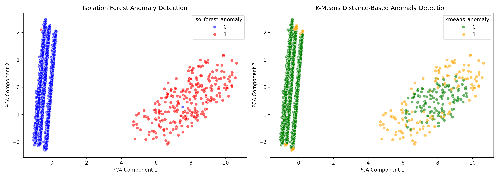

Comparative visual evaluation and flagged sample outputs from the unsupervised models.
The high-dimensional transaction features are projected onto 2 principal components. Red and orange data points highlight transactions flagged as anomalous by Isolation Forest and K-Means models due to extreme amounts or illegal balance changes.

| Evaluation Criteria | Isolation Forest | K-Means Distance Clustering |
|---|---|---|
| Core Mechanism | Tree-based random feature splitting | Euclidean distance to cluster centroid |
| Anomalies Detected | 250 (5.0%) | 250 (5.0%) |
| Primary Strength | Excels in high-dimensional space without distance metrics | Provides clear cluster baselines for user profiling |
| Computational Complexity | $\mathcal{O}(n \log n)$ — Highly scalable | $\mathcal{O}(n \cdot k \cdot i)$ — Sensitive to cluster count $k$ |
| Recommended Use Case | Real-time streaming fraud isolation | Batch behavioral segmentation & profiling |
| Type | Amount (MWK) | Old Balance (MWK) | New Balance (MWK) | IsoForest Flag | K-Means Flag |
|---|---|---|---|---|---|
TRANSFER |
MWK 42,150.00 | MWK 1,200.00 | MWK 18,400.00 | ANOMALY | ANOMALY |
CASH_OUT |
MWK 120.50 | MWK 5,400.00 | MWK 5,279.50 | NORMAL | NORMAL |
TRANSFER |
MWK 38,900.00 | MWK 450.00 | MWK 12,300.00 | ANOMALY | ANOMALY |
PAYMENT |
MWK 45.00 | MWK 1,100.00 | MWK 1,055.00 | NORMAL | NORMAL |
Download the dataset containing all predictions, anomaly scores, and PCA coordinates.
Access model files (.pkl), scripts, and source materials directly on GitHub.